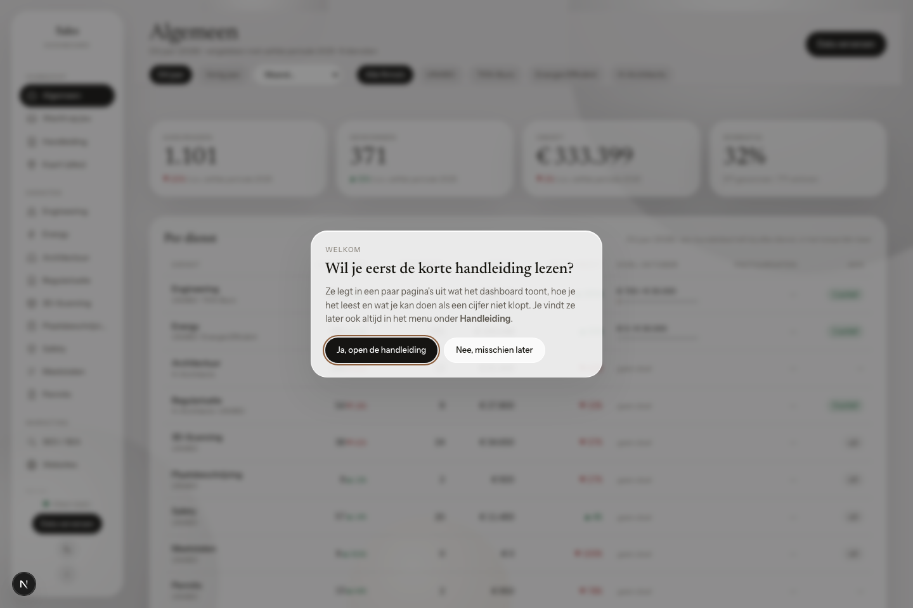
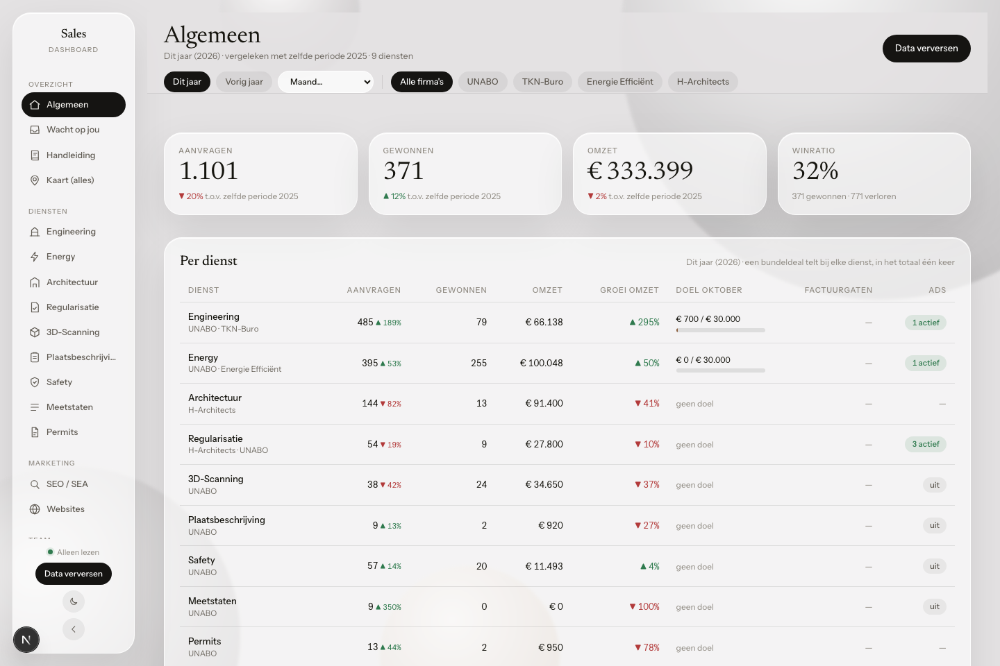
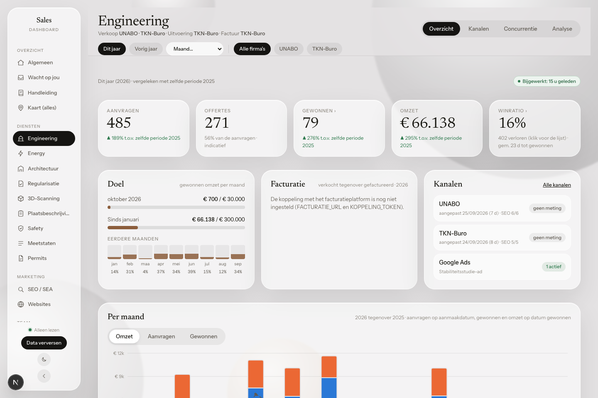
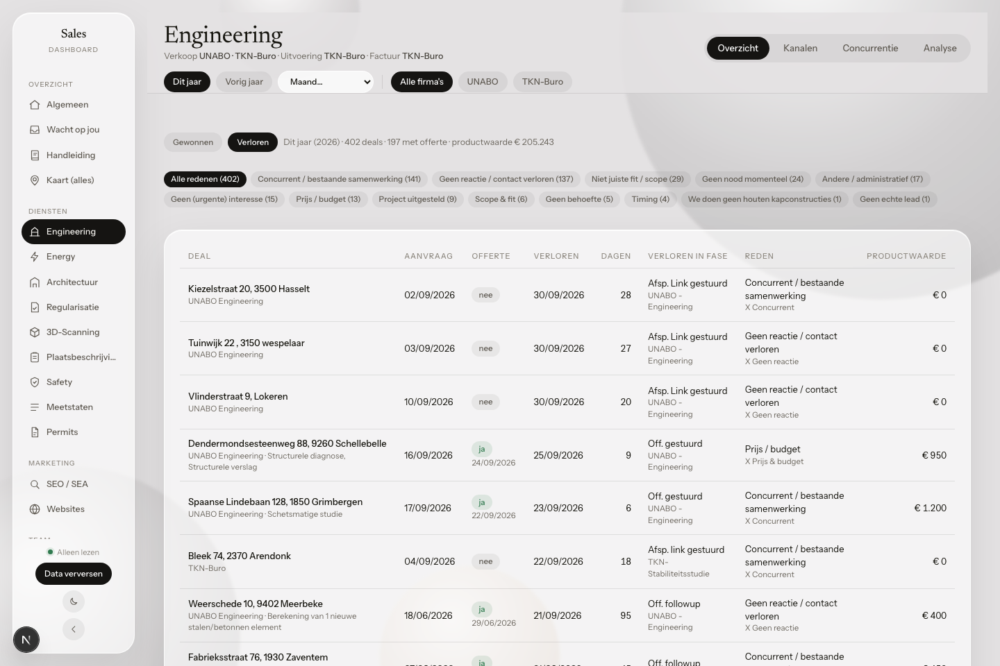
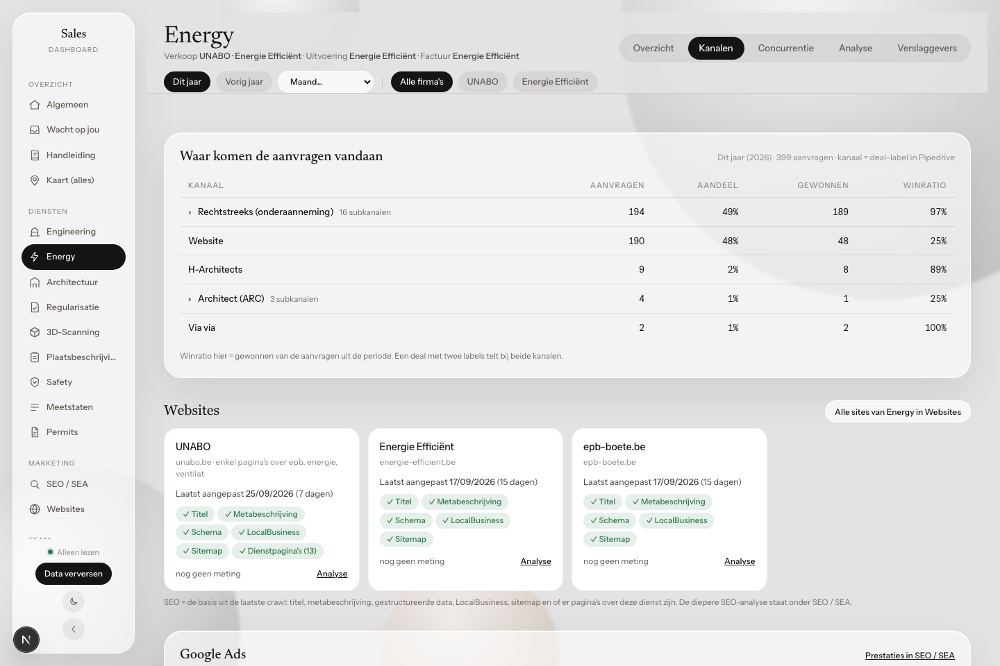
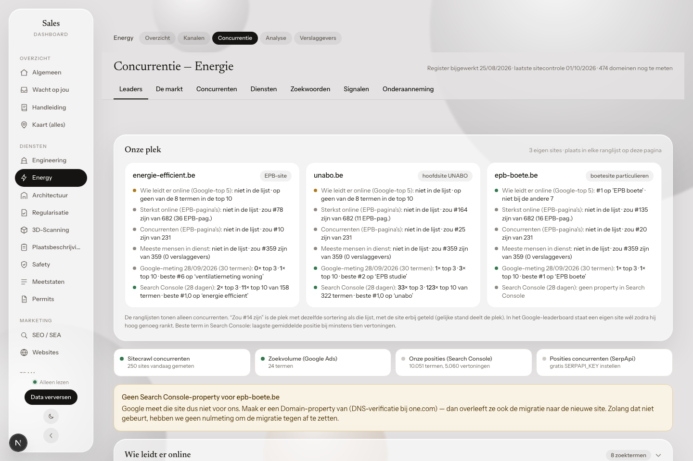
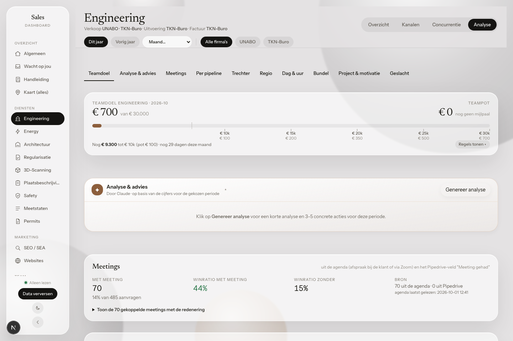
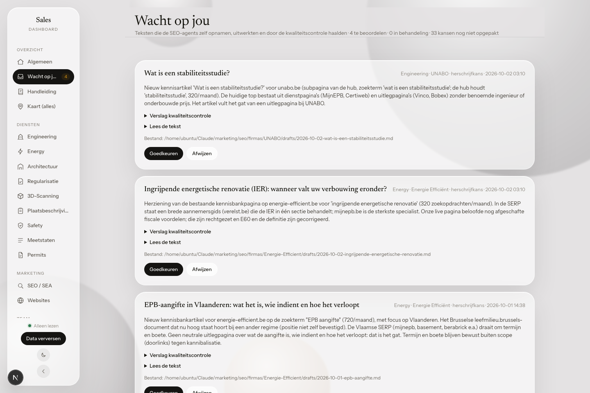

Wat het dashboard toont, hoe je het leest en wat je doet als een cijfer niet klopt. Voor iedereen die met de verkoop van de groep werkt.
Het salesdashboard is de plek waar je de verkoop van de groep per dienst volgt: Engineering, Energy, Architectuur, Regularisatie, 3D-Scanning, Plaatsbeschrijving, Safety, Meetstaten en Permits. Per dienst zie je welke firma verkoopt, wie uitvoert en wie factureert.
De cijfers komen uit de systemen waarin jullie al werken:
| Bron | Wat het dashboard eruit haalt |
|---|---|
| Pipedrive (4 accounts) | Aanvragen, offertes, gewonnen en verloren deals, producten, kanalen (labels), verliesredenen |
| Monday, bord Projects-EE | Projecten die Energie Efficiënt rechtstreeks in onderaanneming uitvoert |
| Facturatiecontrole | Wat er gefactureerd is, wat nog gefactureerd moet worden en waar verkoop en factuur niet overeenkomen |
| Google Ads en Search Console | Advertentiekosten, klikken, conversies en zoekposities |
| Eigen websitemeting | Bezoekers, herkomst en contactacties op onze websites (zonder cookies) |
| Agenda's | Afspraken met klanten, gekoppeld aan hun deal |
Het dashboard leest alleen. Wil je iets aanpassen, dan doe je dat in Pipedrive (of het andere bronsysteem). Bij de volgende synchronisatie staat het dan ook in het dashboard.
Je logt in met je gewone account van de groep (dezelfde login als de andere platformen). Wat je ziet, hangt af van je afdeling: een dienst waarvoor je geen toegang hebt, staat in het menu met een slotje. Zo weet je dat hij bestaat. Heb je toegang nodig tot een andere dienst, vraag het aan Siyan.
Bij je eerste bezoek vraagt het dashboard of je deze handleiding wil lezen. Kies je "Nee, misschien later", dan vind je ze altijd terug in het menu onder Handleiding.

Eén tab per dienst. Elke dienst heeft dezelfde onderdelen: Overzicht, Kanalen, Concurrentie en Analyse.
Bovenaan elke pagina kies je de periode: Dit jaar, Vorig jaar of één maand uit de keuzelijst. Het dashboard toont bewust enkel dit en vorig jaar: genoeg om groei te zien.
Bij "Dit jaar" vergelijkt elk cijfer met dezelfde periode vorig jaar. Een groen pijltje betekent meer dan toen, een rood pijltje minder.
Verkopen meerdere firma's dezelfde dienst, dan kies je met de firmaknoppen Alle firma's of één firma. Op Algemeen toont de firmaknop wat die firma over alle diensten heen verkocht heeft.

Bovenaan staat wie verkoopt, wie uitvoert en wie factureert. Bij Safety is dat bijvoorbeeld: verkoop UNABO, uitvoering en factuur Corenbo.

| Blok | Wat je ziet |
|---|---|
| Kerncijfers | Aanvragen, offertes, gewonnen, omzet en winratio met de groei. Klik op Gewonnen of Winratio voor de lijst met alle deals. |
| Doel | De omzet van de lopende maand tegenover het maanddoel, het totaal sinds januari en de voorbije maanden. |
| Facturatie | Verkocht tegenover gefactureerd, wat nog te factureren is en de facturatiegaten: per dossier langs welke firma het verkocht is en wie factureerde. Klik op een gat om het dossier in facturatiecontrole te openen. |
| Kanalen | De websites van de dienst (laatst aangepast, SEO-score, bezoekers) en of er een advertentie actief is. |
| Campagne | Enkel bij Energy: de koude prospectie bij EPB-verslaggevers. Die telt niet als aanvraag. Je ziet hoeveel contacten er in de lijst staan en wie echt in gesprek is. |
| Per maand | Gestapeld per bron, bijvoorbeeld UNABO en TKN-Buro. Beweeg erover voor de getallen per bron. |
| Per firma, wat is er verkocht | De verdeling over de firma's en de omzet per product. |
| Staat nu open, waarom verloren, laatst gewonnen | Wat nog loopt (en hoeveel zonder offerte), de verliesredenen (klik voor de deals) en de laatste verkopen. |

Per deal zie je: de aanvraagdatum, of er een offerte gestuurd is (met de datum waar die gekend is), de datum gewonnen of verloren, het aantal dagen ertussen, bij verloren deals de fase waarin ze verloren gingen en de reden. De laatste kolom is de productwaarde van enkel deze dienst: bij een bundel telt alleen het deel van deze dienst.
Bij verloren deals filter je bovenaan op een reden. De naam van een deal opent hem in Pipedrive.

De tabel toont langs welk kanaal de aanvragen binnenkomen (het label in Pipedrive) en hoeveel daarvan gewonnen zijn. Een kanaal met subkanalen klik je open. Daaronder staan de websites van de dienst met hun laatste aanpassing en een korte SEO-controle. Onderaan staan de Google Ads-campagnes met hun kosten.

Hier staat het marktonderzoek van de dienst: wie de markt bezet, wie op Google bovenaan staat, wat concurrenten publiceren en welke zoektermen nog niemand goed bedient. Het vak Onze plek toont per eigen site waar die staat in elke ranglijst, ook als hij er (nog) niet in voorkomt. Lange lijsten zijn ingeklapt: klik op de titel of op "Toon alle".
Voor 3D-Scanning, Plaatsbeschrijving, Safety, Meetstaten en Permits is er nog geen marktmonitor.

De Analyse gaat dieper: het teamdoel, een AI-analyse met advies (Engineering en Energy), de meetings, de resultaten per pipeline, de trechter per fase, een kaart per provincie, op welke dag en welk uur aanvragen binnenkomen, bundel tegenover los, gebouwtype en type aanvraag, verliesmotivatie en het geslacht van de contactpersoon.

De SEO-agents werken elke werkdag zelf contentkansen uit: zoektermen die nu door een portaal of de overheid bezet worden, of nieuwe artikels van concurrenten. Ze toetsen of het onderwerp bij ons past, doen het onderzoek, schrijven de tekst en laten een kwaliteitscontrole lopen. Het resultaat komt hier. Je leest de tekst en het controleverslag, daarna keur je goed of af. Publiceren gebeurt pas daarna, apart. Enkel beheerders kunnen goedkeuren.
Websites toont per eigen site de bezoekers, waar ze vandaan komen, welke pagina's ze bekijken, waar ze klikken en hoe snel de site laadt. Kom je er vanuit een dienst, dan telt van een gedeelde site (zoals unabo.be) enkel het deel over die dienst. Dat staat dan bovenaan vermeld.
SEO / SEA toont de advertentiekosten per campagne en per dienst, met de kost per klik, per conversie en per aanvraag.
Elke maandagochtend verschijnt in het Zoom-kanaal Sales Rapport een samenvatting van de vorige week. Elke eerste dag van de maand komt er een rapport over de vorige maand. Je ziet er per dienst de aanvragen, gewonnen deals, omzet, de stand van het doel en de aandachtspunten. De cijfers zijn dezelfde als op het dashboard.
| Begrip | Betekenis |
|---|---|
| Aanvraag | Elke nieuwe deal in Pipedrive (ook "plannen op aanvraag"), geteld op de dag dat de deal aangemaakt werd. |
| Offerte | Een deal die in een offertefase staat of er voorbij is. Indicatief: afgeleid uit de fase. |
| Gewonnen / verloren | De status in Pipedrive, geteld op de dag van winst of verlies. |
| Omzet | Bij UNABO en TKN-Buro de som van de producten van die dienst op de deal. Bij de andere firma's de waarde van de deal. Een bundel telt dus bij elke dienst enkel voor zijn eigen deel. |
| Winratio | Gewonnen gedeeld door (gewonnen + verloren) in de periode. Campagnecontacten tellen niet mee. |
| Campagne | Koude prospectie (bv. EPB-verslaggevers bellen). Geen aanvraag, wel verkoop als het lukt. |
| Kanaal | Het label op de deal in Pipedrive (Website, Via-H-Architects, Studiebureau, ...). |
| Facturatiegat | Verkocht maar na 30 dagen nog niet gefactureerd, meer gefactureerd dan verkocht, of gefactureerd zonder verkoop in Pipedrive. |
| Doel | Gewonnen omzet per maand tegenover het teamdoel. Het dashboard toont de gewonnen omzet als voorlopige stand. |
Op werkdagen haalt het dashboard elk uur de nieuwste gegevens op (van 08:45 tot 22:15 Belgische tijd, 03:45 tot 17:15 in Suriname). Rechtsboven op elke dienstpagina staat wanneer de laatste synchronisatie was. Een deal die net gewonnen is, staat er dus ten laatste een uur later in.